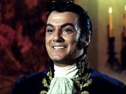
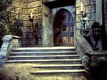
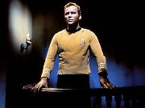
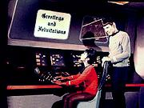
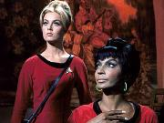

A USS Enterprise
esta a caminho da colnia Beta 6 com um carregamento de suprimentos
quando subitamente os sensores passam a indicar a presena de um
planeta no mapeado prximo ao curso da nave. Spock estranha a ausncia
deste dado nos registros da nave, mas Kirk lembra que no h tempo
para investigaes devido a urgncia para entrega das provises
em Beta 6.
Kirk manda que
Uhura notifique a Frota Estelar a descoberta, mas esta reporta forte
interferncia nas comunicaes, interferncia que suspeita estar
sendo causada pelo planeta recm descoberto. Kirk manda sulu mudar
o curso para distanciar-se do planeta, mas enquanto tenta faz-lo
subitamente desaparece da ponte. Logo em seguida Kirk quem
desaparece. Spock coloca a nave em alerta.
A Enterprise
permanece em rbita do planeta misterioso, e Spock conduz uma busca
em toda a nave e na superfcie do planeta usando os instrumentos da
Enterprise, mas aps quatro horas nenhum sinal de Kirk ou Sulu
encontrado, o que leva o tenente DeSalle a pedir permisso para
levar um grupo de desembarque a superfcie, no que imediatamente
apoiada por McCoy.
Spock entretanto
esta preocupado com a segurana dos membros da tripulao, pois
as informaes coletadas pelos sensores informar que as condies
na superfcie so extremamente nocivas a vida humana, condies
estas que incluem ausncia de vegetao, solo estril,
temperaturas extremamente elevadas, atmosfera txica, tempestades
de tornados e erupes vulcnicas.
Enquanto se discute
qual ao a ser tomada, Uhura recebe uma mensagem incomum em uma
dos seus monitores : "Greetings...and felicitations.".
Intriga, spock manda Uhura enviar uma mensagem destinada a superfcie
do planeta solicitando alguma identificao, provavelmente
esperando que quem mandou a primeira mensagem recebe-se a comunicao
da Enterprise. Como resposta uma reposta ainda mais intrigante
apareceu no monitor : "Hip-hip...hoorah" e tallyho.

Apesar de
zombeteira, a mensagem aponta a existncia de algum tipo de forma
de vida na superfcie, o faz Spock decidir-se por mandar um grupo
investigar. Scott pede para ser includo neste grupo mas Spock
nega, sob alegao de que o engenheiro no pode ser substitudo
em suas funes. A mesma alegao vale para o prprio Spock,
que decide por enviar Desalle, McCoy e o geofsico Jaeger. O grupo
transportado para as coordenadas de onde foram enviadas as
mensagens com ordens de estabelecer comunicao com a nave assim
que chegarem superfcie.
Mas assim que o
grupo materializado, eles se vem em um ambiente agradvel e
confortvel totalmente adequado a sua sobrevivncia, em total
contraste com as leituras feitas em rbita. Apesar disto eles no
conseguem estabelecer comunicaes de forma alguma com a nave.
Enquanto procuram um melhor local para tentar estabelecer contato, o
grupo encontra uma estrutura similar a entrada de um antigo castelo
medieval.
Eles movem-se para
investigar a estrutura,
e em seu interior encontram uma decorao idntica a da Terra, do
perodo napolenico. Tambm encontram Kirk e Sulu, paralisados
como estatuas de cera, porm vivos. Subitamente eles ouvem uma
musica e quando se voltam para a fonte de tal som se deparam com um
homem vestido em trajes do exercito francs do sculo XVIII
tocando uma espcie de piano. Este d as boas vindas ao grupo e
desperta Kirk e Sulu de seu sono forado com um simples gesto de mo.
A pedido do capito, que parece ignorar os eventos desde seu
desaparecimento, McCoy resume os fatos das ultimas quatros horas.
O anfitrio
informar que eles esto no planeta Ghotos, e pede desculpas pela
forma como foram levados ali, mas que ele no pode resistir ao v-los
passando. Kirk se identifica como capito da nave e aps
novas felicitaes de seu anfitrio, este se identifica como
General Trelane, parecendo sempre muito solicito e cordial,
entretanto DeSalle lembra a Kirk que eles esto presos, sem
comunicao com a nave.
Ignorando as
preocupaes de DeSalle, Trelane parece surpreso com o fato dos
humanos poderem viajar pelo espao, o que no estaria de acordo
com suas observaes. Jaeger percebe que a decorao do
lugar lembra um perodo histrico de cerca de 900 anos, segundo
seus clculos, o perodo que algum poderia enxergar olhando para
a Terra daquele ponto do espao. Tal concluso aborrece Trelane,
por ter sido este incapaz de recriar um ambiente familiar a seus
convidados forados.
Trelane insiste na
tese de que so todos convidados de seu pequeno imprio e que
deseja discutir com estes as campanhas de conquista da Terra,
aparentemente tendo como referncia o perodo da expanso Militar
Francesa sobre a Europa conduzida por Napoleo. Apesar do esforo
de Kirk para mostrar a Trelane a misso atual da Enterprise e de
explorao cientifica pacifica, este permanece fixado no propsito
de estudar a beligerncia da Terra.
Quando DeSalle
tenta usar o faser contra Trelane, Kirk lembra a este para que use a
arma em modo tonteio, Trelane identifica o nome do navegador da Enterprise como sendo de origem
francesa, inclusive falando algumas palavras em Francs. Tal origem
confirmada por DeSalle que informa ter ancestrais nascidos neste
pais, o que faz Trelane declarar sua admirao por Napoleo
Bonaparte.
Kirk estende ento
as apresentaes ao restante do grupo, Sulu, McCoy e Karl Jaeger.
Trelane identifica a origem alem deste ultimo, inclusive falando
com ele tambm nesta lngua. Jaeger afirma a Trelane ser um
cientista e no um militar, afirmao posta em duvida pelo
anfitrio. Pensando que Trelane estivesse distrado DeSalle tenta
usar o fazer contra ele, mas paralisado antes que possa disparar.
Trelane pega o
faser de DeSalle, rapidamente descobrindo como a mesma funciona e
como esta pode ser mortal as disparar com carga mxima em algumas
das estatuas que enfeitavam o lugar, provocando neste um tipo
de admirao. Kirk toma de volta a arma temendo que Trelane possa
querer test-la em algum dos membros de sua equipe.
Trelane deixa
transparecer no ser esta sua inteno, e diz que a reao de
Kirk era esperada, uma vez que a reao de todo o humano frente ao
desconhecido o tem-lo. Ele antecipa o desejo de Kirk de saber
como Trelane criou todo aquele ambiente, e diz que seu povo criou um
dispositivo que permite o controle da matria, transformado-a em
qualquer coisa que queiram.

Kirk continua a
questionar Trelane, que comea a ficar entediado com tal
comportamento, e quando Kirk ameaa ir embora Trelane diz que
precisar dar a este uma demonstrao de sua autoridade.
Com um gesto ele faz o capito da Enterprise desaparecer,
para ser colocado em um lugar com ambiente irrespirvel. Segundos
depois Trelane trs Kirk de volta, e diz a este que o lugar onde
esteve era um exemplo da real atmosfera do planeta, longe de sua
influencia. Trelane ameaa ficar mais bravo caso seus
convidados no se comportem.
A bordo da
Enterprise Spock e Scott conseguem alterar o equipamento da nave
permitindo que eles identifiquem uma pequena rea estvel o
suficiente para permitir a sobrevivncia do grupo de desembarque.
Ele planeja focalizar qualquer forma de vida detectvel nesta rea
para bordo, imaginando que caso os membros do grupo estejam vivos, s
poderiam estar ali.
De volta a Ghotos,
Trelane est discursando para uma platia pouco atenta sobre perodos
violentos da Historia humana, enquanto seus hospedes esto
mais interessados em discutir entre si a origem de Trelane, e seu
propsito uma vez que as leituras do tricorder de McCoy no
registram a presena dele, de forma alguma.
Jaeger percebe que
o fogo da lareira est aceso e queimando, mas no emite calor
algum. Kirk junta este fato aos enganos cometidos por Trelane quanto
a ao perodo histrico da Terra atual para concluir que Trelane,
apesar do poder que tem, passvel de muitos enganos, o que lhe
da a esperana de poder usar isto de alguma forma para livrar-se de
seu anfitrio indesejvel. Trelane percebe que esto comentando
sobre ele, mas isto o deixa animado, ao invs de aborrec-lo.
Kirk tenta convenc-lo
a libert-los mas Trelane no demonstra ter tal inteno. Ele
diz a Kirk que estava muito aborrecido antes que Kirk e seu
grupo chegassem e que eles devem ficar. Kirk
insiste, e enquanto tenta convencer Trelane deixa escapar que
existem mulheres a bordo da Enterprise, fato que o deixa surpreso e
satisfeito. Ele faz meno de trazer algumas mulheres para a
superfcie, mas antes que possa acontecer, o grupo recebe um sinal
de transporte da nave, indicando que Spock conseguiu romper a
barreira de impedia sua localizao. O grupo desmaterializa-se sob
os protestos de Trelane.
A bordo da
Enterprise Kirk pergunta a Spock como este foi capaz de localiz-lo
na superfcie, e Spock responde que simplesmente mandou trazer
todas as formas de vida localizadas naquela rea. Como Trelane no
foi transportado McCoy conclui que este no uma forma de vida
conforme eles suspeitavam.
Na ponte, Kirk
ordena partida imediata, mas antes que isto possa ser feito Trelane
aparece na ponte da nave, perguntando a Kirk por suas armas e
querendo saber quem era Spock, responsvel pela fuga do grupo de
desembarque, fato que o teria aborrecido. Quando Spock se identifica
Trelane espanta-se pelo fato dele no ser humano.
Trelane leva o
grupo de volta a Ghotos para um jantar, incluindo desta vez
Spock, Uhura e a ordenana Teresa Ross, as quais passa a galantear,
isto aps mais uma tentativa de ataque de DeSalle a Trelane ser
impedida por este sem nenhum esforo. No h represlias, mas
Trelane ameaa mais uma vez no ser to indulgente, caso eles
continuem sendo mal comportados.
Apesar disto Spock
mais uma vez deixa claro a Trelane que se compraz nas atitudes de
Trelane. Este ao invs de se irritar com o Vulcano exulta em ver
como Spock se ope a ele, atribuindo tal a fato a parte humana de
Spock. Trelane faz com Uhura agora toque o seu o piano enquanto dana
com a ordenana Ross.
Enquanto isto o
grupo volta a discutir o que fazer e como se livrar do incomodo
anfitrio. Diante dos poderes de Trelane Kirk decidi aceitar a
hospitalidade de Trelane at que eles consigam um modo de
escapar. McCoy reclama que a comida servida por Trelane no tem
gosto, o que Spock encara como sendo algo esperado, uma vez que este
conhece a Terra somente por observao, mas que no tem nenhuma
experincia real sobre ela.
Eles mais uma vez
concluem que Trelane poderoso mas falvel o que pode ser usado
contra ele. Spock conclui tambm que deve haver alguma espcie de
mquina que permita a Trelane fazer suas mgicas. Enquanto
isto o jovem general providencia uma nova vestimenta para a ordenana
Ross, um lindo vestido medieval.
Spock suspeita, e
Kirk concorda, que talvez o enorme espelho pendurado na sala, e do
qual Trelane est sempre perto, possa ter algo a ver com este
suposto dispositivo. Ambos acreditam que o equipamento que permite a
Trelane seu controle dentro da sala onde eles esto independente
do equipamento que mantm a atmosfera externa do planeta
controlada. Kirk, acreditando que pode tirar proveito do
comportamento imaturo de Trelane para de alguma forma ludibri-lo
inicia parte de um estratagema neste sentido.
Subitamente o capito
comea uma discusso com Trelane, causada por cimes da ordenana
Ross. Aps esta breve discusso, Trelane, exultante se auto
desafia para um duelo de morte com Kirk. Momentos depois todo o
grupo de desembarque esta prestes a assistir Kirk e Trelane lutando
em um duelo de armas mortal.
Trelane reclama o
direito do primeiro tiro para si, mas Kirk diz que ambos devem
atirar juntos. Trelane insiste mais uma vez com ameaas, fazendo
capito ceder, entretanto, Trelane erra o tiro propositalmente
disparando sua arma para ao alto e se colocando a seguir
a merc de Kirk.
Este atira, mas no
em Trelane e sim no espelho que julgava ser a fonte do seu poder. O
tiro parece causar o efeito esperado, destruindo o espelho e
causando uma srie de problemas ao ambiente e cessando a interferncia
que impedia o contato com a nave. O grupo vai embora sob ameaas de
Trelane que mataria a todos, especialmente a Kirk.
O grupo chega a
Enterprise e esta deixa rbita imediatamente, mas quando pareciam
estar livres novamente a nave se v frente ao planeta Ghotos.
Trelane, de alguma forma, trouxe o planeta inteiro a frente da nave.
Nenhuma ao evasiva tem sucesso, pois o planeta literalmente muda
de posio acompanhando cada mudana de curso de Sulu. Kirk
desiste, manda Sulu colocar a nave em rbita e se prepara para
descer ao planeta novamente, sob os protestos de McCoy. Ele deixa
ordens para que a nave v embora caso ele no volte em uma hora.

Ao descer Kirk
encontra desta vez o cenrio de um tribunal, tendo como juiz nenhum
outro seno o prprio Trelane, que esta disposto a seguir com seus
jogos e avisa a Kirk que desta vez seus instrumentos so indestrutveis.
O capito pede para Trelane canalize sua raiva nele somente, pois
ele era o lder e que deixa a nave seguir, mas Trelane no parece
disposto a aceitar tal proposta, alm de condenar Kirk forca.
O tempo passa e
Spock est prestes a ter que deixar a rbita de Ghotos sem Kirk.
Enquanto Trelane encerra o julgamento de Kirk radiante por ter,
segundo ele prprio, conseguido ficar genuinamente enfurecido.
Embora Trelane tenha deixado a idia de que tudo era uma espcie
de experincia, ele continua firme em seu propsito de enforcar
Kirk, enforcamento do qual pretende ser o carrasco.
Kirk tenta ento
convencer Trelane a aceitar um desafio real, manipulando-o
para que este aceite a
proposta de Kirk. Este se oferece para ser a presa de Trelane em uma
caada, o que lhe daria uma real diverso, e em troca a Enterprise
estaria livre para partir. Trelane diz aceitar mas no oferece
condies para Kirk informe a Spock que pode partir.
Do lado de fora da
estrutura, na floresta, o capito da Enterprise faz o que pode para
se manter longe do quase onipresente perseguidor, mas no demora
muito para ser encurralado, principalmente por que Trelane no
hesita nenhum segundo em usar seus truque para impedir que Kirk
tenha alguma chance, e deixa claro que no pretende libertar os
outros.
Com kirk preso
entre grades sem ter por onde escapar, e com uma espada apontada em
sua direo, Trelane se conclama vencedor do jogo, mas Kirk
refuta, afirmando que Trelane no vencer nada, por ter usado seus
truques mais uma vez, trapaceando. Num ato de ira, o capito toma a
espada de Trelane e a quebra, incrivelmente Trelane fica brevemente
desnorteado, ento Kirk o esbofeteia, deixando-o mais zangado
ainda, porem sem ao.
Mas apesar disto
Trelane no d mostras que v ceder aos subterfgios de Kirk
desta vez. quando uma voz feminina surge chamando por Trelane,
voz que ele reconhece, chamando de Me. Em seguida uma voz
masculina ecoa, a voz do pai de Trelane. Ambas as criaturas
aparecem em forma de energia pura, passando uma reprimenda no filho.
Ao final de tudo era exatamente isto que Trelane era, um garoto
desobediente brincando em seu parque de diverses particular.
O casal passa
um pito no menino reclamo, e Kirk ainda sofre da indignidade
de ser comparada a um animal de estimao. Mas pelo menos durante
o sermo a Trelane, dito que eles (os humanos) tm esprito
e que so superiores. Sobre protestos, o menino retirado
do local, sendo possivelmente colocado de castigo em seu quarto e
tendo revogada sua permisso para fazer planetas.
Aps Trelane ter
ido embora, o casal dirige-se a Kirk pedindo-lhes desculpas pelos
problemas causados pelo seu filho mal comportado. Kirk pergunta quem
so eles, mas sua pergunta ignorada. Os seres apenas informam
que mantero as condies de vida no planeta at que ele tenha
ido embora e desaparecem.
Kirk
volta a Enterprise e esta retoma seu curso e enquanto se afasta de
Ghotos,. Kirk nota que pelo menos Spock ainda pensa bastante sobre o
assunto. Indagado sobre a questo Spock revela estar em duvida
sobre como registrar Trelane no Banco de Dados da Enterprise. Kirk
sugere Deus da Guerra, algo que causa estranheza a Spock. Kirk
ento sugere cham-lo de menino malcriado, comparando as aes
de Trelane as brincadeiras de gosto duvidoso que qualquer criana
faz na infncia, o que deixa Spock indignado.
Mais
uma vez a tripulao da Enterprise levada a um confronto com
uma entidade super poderosa, capaz de proezas inimaginveis para um
ser humano. Se algum duvida que este um tema recorrente, vai
encontrar as provas s na primeira temporada em pelo mais quatro
episdios : Where No Man Has Gone Before, Charlie
X,Arena e Errand of Mercy.

A
novidade aqui Trelane, personagem com vaga cativa na galeria de
viles da Srie Clssica e alma deste segmento. Num dia
calmo e rotineiro ele surge para infernizar a vida da brava tripulao
da Enterprise, e como toda criana levada, alm de nos tirar do srio,
ainda tem a capacidade de fazer os adultos de bobos.
Aqui
no diferente, pois se o episodio comea srio e at com um
certo ar de mistrio, com o sumio de Sulu e Kirk colocando o
sisudo Spock no comando da nave e conseqentemente na busca ambos,
o panorama muda quando somos apresentados ao Senhor de Ghotos, que
apesar de pegajoso em sua curiosidade infantil e com uma admirao
de gosto duvidoso, jamais aparenta ser realmente perigoso.
Este
o mote de The
Squire of Ghotos: Kirk e sua tripulao levando
Trelane a srio e sem saber como escapar, enquanto Trelane leva a
tripulao da Enterprise na brincadeira, literalmente.
E enquanto o espectador no sabe do que se trata, (assim como Kirk
e sua tripulao) divertido acompanh-lo em sua experincia,
divertido por que em quase todo o episodio no se sente uma real
ameaa por parte de Trelane.
Mrito
absoluto de William Campbell, que conseguiu compor um personagem
absolutamente fiel a proposta do trama: Uma criana, embora uma
criana com poderes extraordinrios, ainda uma criana, curiosa e
vida por companhia. muito difcil para qualquer um que assista
ao episodio no se identificar em algum momento com Trelane, em
algum momento da prpria infncia.
Do
ponto de vista de Trelane a tripulao da Enterprise no passa de
mero brinquedo, de seres primitivos e selvagens que servem apenas
como distrao. Embora as referncias do jovem sejam um
pouco atrasadas, no h como negar que mesmo no sculo 23 a
cultura da Federao ainda consideravelmente atrasada pelo
menos tecnologicamente em relao a seu anfitrio.
interessante como apesar de retratar uma raa humana evoluda em Jornada
nas Estrelas, muito mais do que nos mesmos acreditamos que um
dia venhamos a ser, Roddenberry sempre que pode faz questo de
ressaltar que sempre encontraremos algum que nos supere, uma
mensagem que hoje fica no campo da metafsica, mas que na dcada
de sessenta tinha uma relevncia muito forte para o ser humano da sculo
vinte, considerarmos a interveno americana no Vietn e a luta
contra o racismo.
Mesmo
os exemplos escolhidos por Trelane como objetos de sua admirao so
uma representao sutil daquilo que os seres humanos tambm
admiram, pois tanto Napoleo Bonaparte como Alexander Hamilton
(este ultimo mais conhecido dos americanos) foram homens que se
impuseram pela fora e violncia. Napoleo, apesar de derrotado,
admirado por muita gente at os dias de hoje e o sistema estatal
Napolenico influenciou a formao da Europa moderna, e mesmo
adversrios do imperialismo Francs como Espanha, Itlia e
Alemanha se inspiram neste modelo. Hamilton
heri nacional.

The
Squire os Ghotos traz na entrelinhas algumas metforas sob o
comportamento humano de
forma absolutamente subliminar, talvez at de mais, pois apesar do
bom trabalho de Campbell o segmento segue meio morno, sem se definir
se quer ser engraado ou s